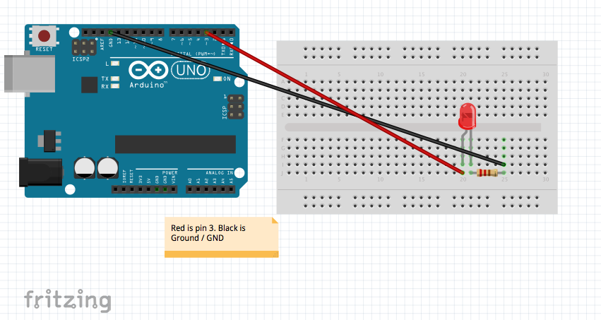

You also need the Arduino UNO.
Build your arduino cercit.

- Download the zip, here.
- Once download extracted the .ZIP to a folder.
- Drag the folder to your desktop.
- Go to terminal or Command Prompt, and type 'cd Desktop/Arduino-Led/'
- Plug in your Arduino UNO through the USB port.
- Than once in there type 'node main.js'
- Than connect to 'Localhost:8080' in your browser. EX: Safari Chrome etc